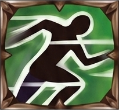

<!DOCTYPE html>
<html lang="pt-BR">
<head>
<meta charset="UTF-8">
<meta name="viewport" content="width=device-width, initial-scale=1">
<title>Kings of Ruin · Narrador</title>
<link rel="stylesheet" href="theme.css">
<style>
.recent { display: flex; align-items: center; gap: 6px; flex-wrap: wrap; margin-bottom: 14px; }
.recent .chip { cursor: pointer; }
.kp-title { text-align: center; font-size: .875rem; color: var(--text-2); text-transform: uppercase; letter-spacing: .12em; }
.kp-display { min-height: 64px; display: flex; align-items: center; justify-content: center; margin: 6px auto 4px; max-width: 22rem; border-bottom: 1px solid var(--line-control); }
.kp-code { font-family: var(--font-title); font-weight: 700; font-size: 2.1rem; color: var(--gold); letter-spacing: .14em; }
.kp-placeholder { color: var(--text-3); font-style: italic; font-size: 1.0625rem; }
.kp-msg { min-height: 24px; text-align: center; color: var(--danger); font-size: .9375rem; margin-bottom: 8px; }
.keypad { display: grid; grid-template-columns: repeat(3, minmax(0, 1fr)); gap: 8px; max-width: 22rem; margin: 0 auto; }
.key { height: 58px; display: flex; align-items: center; justify-content: center; background: var(--card-raised); border: 1px solid var(--line-control); border-radius: var(--radius); font-family: var(--font-title); font-weight: 700; font-size: 1.4rem; color: var(--title); user-select: none; -webkit-user-select: none; }
.key:active { border-color: var(--gold); background: var(--card-selected); }
.key.letter { color: var(--gold); }
.key.del { color: var(--text-2); }
.key.del .ms, .key.ok .ms { font-size: 1.6rem; }
.key.ok { background: linear-gradient(135deg, #d4b886, #9c7f4c); color: #060807; border-color: #111613; }
.key.ok:active { filter: brightness(1.1); }
.key.ok.dim { opacity: .4; }
.mode-row { display: flex; gap: 8px; max-width: 22rem; margin: 14px auto 0; }
.mode-row .btn { flex: 1; min-width: 0; padding: 0 8px; letter-spacing: .06em; }
.gi-inline { display: inline-flex; font-size: 1.25rem; color: var(--gold); margin-right: 6px; }
.part-head { display: flex; align-items: center; gap: 6px; margin: 0 0 12px -10px; }
.parts { max-width: 24rem; margin: 0 auto; }
.choice-btn .gi { font-size: 1.5rem; color: var(--gold); flex-shrink: 0; }
.read-head { display: flex; align-items: center; justify-content: space-between; gap: 6px; margin-bottom: 4px; }
.read-head .icon-btn { flex-shrink: 0; }
.read-head .icon-btn:first-child { margin-left: -10px; }
.read-head .icon-btn:last-child { margin-right: -8px; }
.read-code { color: var(--gold); letter-spacing: .06em; }
.read-title { flex: 1; min-width: 0; margin: 0; font-size: 1.125rem; line-height: 1.3; }
.narr-art { width: 52px; height: 52px; border-radius: 50%; flex-shrink: 0; display: flex; align-items: center; justify-content: center; border: 1px solid rgba(194,166,117,.3); background: radial-gradient(circle, rgba(194,166,117,.14), transparent 70%); }
.narr-art .gi { font-size: 1.6rem; color: var(--gold); }
.narr-player { display: flex; align-items: center; gap: 6px; }
.narr-player .ctrl-btn { width: 44px; height: 44px; flex-shrink: 0; }
.narr-player .ctrl-btn .ms { font-size: 1.75rem; }
.narr-player .play-btn { width: 48px; height: 48px; flex-shrink: 0; }
.narr-player .play-btn .ms { font-size: 1.75rem; }
.narr-progress { margin-left: 10px; min-height: 48px; display: flex; flex-direction: column; justify-content: center; gap: 4px; }
.narr-progress { flex: 1; min-width: 0; }
.seek { height: 24px; display: block; }
.narr-progress .t-meta { line-height: 1; margin-top: 0 !important; }
.seek::-webkit-slider-runnable-track { background: linear-gradient(to right, var(--gold) var(--p, 0%), #050706 var(--p, 0%)); }
.seek::-moz-range-progress { background: var(--gold); height: 8px; border-radius: 4px; }
.narr-controls { display: flex; align-items: center; justify-content: center; gap: 28px; margin-top: 6px; }
.precheck { margin-top: 16px; padding: 12px; border: 1px dashed var(--gold-soft); border-radius: var(--radius); background: rgba(194,166,117,.06); }
.precheck .hint { margin: 8px 0 0; font-style: italic; color: var(--text-2); }
.precheck .otherwise { margin: 6px 0 0; color: var(--text-3); font-size: .9375rem; }
.narr-text { margin: 16px 0 0; padding-top: 14px; border-top: 1px solid var(--line); font-size: 1.125rem; line-height: 1.65; white-space: pre-wrap; }
.precheck + .narr-text { margin-top: 14px; }
.effects { margin-top: 16px; }
.effects-list { display: flex; flex-wrap: wrap; gap: 6px; margin-top: 6px; }
.effect { display: inline-flex; align-items: center; padding: 4px 10px; border: 1px solid var(--line-control); border-radius: 999px; font-size: .9375rem; color: var(--text); }
.effect.good { border-color: var(--gold-soft); color: var(--gold); }
.effect.bad { border-color: var(--mark-line); color: var(--danger); background: var(--danger-bg); }
.choices { margin-top: 18px; padding-top: 14px; border-top: 1px solid var(--line); }
.choice-btn { display: flex; align-items: center; gap: 10px; width: 100%; min-height: 52px; padding: 8px 12px; background: var(--card-raised); border: 1px solid var(--line-control); border-radius: var(--radius); text-align: left; color: var(--title); font-family: var(--font-title); font-weight: 700; font-size: .9375rem; }
.choice-btn + .choice-btn { margin-top: 8px; }
.choice-btn:active { border-color: var(--gold); background: var(--card-selected); }
.choice-btn .choice-label { flex: 1; min-width: 0; }
.choice-btn .ms { color: var(--text-3); }
.cost { display: inline-flex; align-items: center; gap: 3px; color: var(--gold); flex-shrink: 0; }
.cost img { width: 22px; height: 22px; border-radius:var(--radius); }
.end-text { margin: 0 0 12px; font-size: 1.0625rem; color: var(--text-2); font-style: italic; }
.choices .t-label { display: block; margin-bottom: 8px; }
</style>
</head>
<body>
<main class="page">
    <div id="view"></div>
</main>

<script src="app.js"></script>
<script>
KR.header();
KR.nav('narrador');
const $ = id => document.getElementById(id);

// Grafo de trechos (placeholder): cada trecho tem texto + áudio, e pode ter verificação prévia (precheck), consequências (effects)
// e escolhas (choices) que levam a outros trechos — inclusive de volta a um já visitado. Locais digitáveis têm id numérico;
// os internos começam com "n" e os segredos com "s". Os textos reais do livro entram depois.
const NODES = {
    '101': { code: '101', title: 'Terras Evitadas', duration: 124,
        precheck: { label: 'Verificar antes de explorar', hint: 'Se a caixa 1 da condição “Curiosidades” não está marcada, escolha esta opção.', otherwise: 'Caso contrário, continue a leitura.', to: 'n101_pistas' },
        text: 'O vento arrasta poeira seca por campos que já não conhecem colheita. Cercas tombadas riscam o chão como costelas expostas, e ao longe um moinho sem velas gira devagar, rangendo uma cantiga que ninguém ensinou.\n\nNenhuma porta se abre na estrada. Mas as cortinas de uma janela se mexem quando vocês passam.',
        choices: [{ label: 'Ir aos moinhos', cost: 1, to: 'n101_moinhos' }, { label: 'Bater à porta da fazenda', to: 'n101_fazenda' }] },
    'n101_pistas': { code: '101', title: 'Rastros na Poeira', duration: 62,
        text: 'Agachados à beira da estrada, vocês reconhecem pegadas miúdas que contornam as cercas, sempre rumo ao moinho mais distante. Alguém passou por aqui há pouco — e passou com pressa.',
        choices: [{ label: 'Voltar à estrada', to: '101', instruction: { text: 'Marque a caixa numerada 1 da condição “Curiosidades”.', cond: { id: 'c4', n: 1, name: 'Curiosidades' } } }] },
    'n101_moinhos': { code: '101', title: 'Os Moinhos Mortos', duration: 88,
        text: 'As pás rasgadas cortam o céu cinzento em fatias lentas. Cada giro arranca do madeiramento um gemido longo, quase humano. Vocês sentem algo observando de entre as estruturas, mas, ao olhar, só encontram sombras compridas.',
        effects: [{ tone: 'bad', text: 'Ganhe 1 de Pavor' }],
        choices: [{ label: 'Entrar no moinho mais próximo', cost: 1, to: 'n101_dentro' }, { label: 'Recuar para a estrada', to: '101' }] },
    'n101_dentro': { code: '101', title: 'O Círculo de Sal', duration: 94,
        text: 'Dentro, o ar cheira a grão podre e cinza fria. No chão de tábuas, um círculo de sal foi desenhado às pressas e depois pisoteado. Entre as vigas, algo brilha: uma chave pequena, presa com fita vermelha.',
        effects: [{ tone: 'good', text: 'Receba a Chave com Fita Vermelha' }],
        choices: [{ label: 'Sair do moinho', to: 'n101_moinhos' }] },
    'n101_fazenda': { code: '101', title: 'A Porta Fechada', duration: 70,
        text: 'A porta está trancada por dentro. Ninguém responde, mas o cheiro de pão recém-assado escapa pelas frestas, contrariando tudo o que vocês viram até aqui.',
        effects: [{ tone: 'neutral', text: 'Avance 1 ponto na Passagem do Tempo' }],
        choices: [{ label: 'Voltar à estrada', to: '101' }] },
    '104': { code: '104', title: 'Bosque das Garras', duration: 108,
        text: 'A névoa aqui é mais espessa do que em qualquer outro trecho do caminho. Entre as árvores retorcidas, vultos pairam baixo sobre a terra encharcada, como se esperassem por algo que ainda não chegou. Um cheiro de ferro molhado paira no ar.\n\nVocês notam marcas de garras profundas na casca das árvores mais próximas — recentes, ainda escurecidas de seiva.' },
    '110': { code: '110', title: 'Ponte Despedaçada', duration: 118,
        text: 'O rio corre escuro e veloz sob o que resta da antiga ponte: dois arcos de pedra que não se encontram mais no meio. Cordas podres balançam dos restos do corrimão, e algo pesado se arrasta na margem oposta, escondido pelo capim alto.\n\nÉ possível atravessar pelas pedras do leito — se alguém estiver disposto a molhar os pés em água que não reflete o céu.',
        choices: [{ label: 'Atravessar pelas pedras do leito', cost: 2, to: 'n110_pedras' }, { label: 'Seguir o rio até as passarelas', to: '122' }] },
    'n110_pedras': { code: '110', title: 'A Correnteza', duration: 66,
        text: 'Cada pedra escorrega sob o peso de vocês. No meio do caminho, a correnteza puxa com força súbita, e por pouco a carga de alguém não vai embora com ela.',
        effects: [{ tone: 'bad', text: 'Perca 1 de Comida' }],
        choices: [{ label: 'Voltar à ponte', to: '110' }] },
    '115': { code: '115', title: 'O Salão Quebrado', duration: 132,
        text: 'As ruínas de pedra erguem-se contra o céu cinzento, cobertas por líquens que brilham com uma luz doentia ao entardecer. No centro do que um dia foi um salão, um altar quebrado ainda guarda vestígios de rituais antigos.\n\nUm candelabro de ferro enferrujado pende do teto, e por um instante vocês juram ver uma chama tremular dentro dele — mas está frio ao toque.' },
    '122': { code: '122', title: 'Passarelas Inundadas', duration: 95,
        text: 'As passarelas de madeira rangem sob o peso de cada passo, suspensas sobre um pântano que parece não ter fundo. Ao longe, luzes fracas piscam entre os juncos — fogos-fátuos, dizem os mais velhos, ou algo que apenas finge sê-lo.\n\nUm dos tabuados está quebrado adiante; será preciso decidir como atravessar.' },
    '132': { code: '132', title: 'O Casebre Torto', duration: 160,
        text: 'O casebre inclina-se como se estivesse cansado de ficar de pé. Dentro, uma mulher idosa tece em silêncio junto à lareira apagada, sem erguer os olhos quando a porta range.\n\nEla não fala. Mas seu olhar, quando finalmente encontra o de vocês, carrega o peso de algo que não foi dito há muito tempo.',
        end: { text: 'A exploração termina. Ganhe a condição “Abandonados”: marque a caixa numerada 2.', cond: { id: 'c1', n: 2, name: 'Abandonados' } } },
    '150': { code: '150', title: 'Trilha dos Escravos', duration: 84,
        text: 'A trilha é um sulco de lama endurecida, marcado por argolas de ferro cravadas em estacas a intervalos regulares. Há muito tempo ninguém é acorrentado aqui, mas o chão ainda guarda a forma de passos arrastados.\n\nNo fim da trilha, uma figura encapuzada espera, de costas, sem se mover.',
        choices: [{ label: 'Prosseguir', to: 'n150_fim', instruction: { text: 'Ganhe a condição “Abandonados”: marque a caixa numerada 1.', cond: { id: 'c1', n: 1, name: 'Abandonados' } } }] },
    'n150_fim': { code: '150', title: 'A Figura Encapuzada', duration: 58,
        text: 'Quando vocês se aproximam, a figura não se vira. “Os que ficaram para trás”, diz ela, “são os que ainda sabem o caminho.”',
        choices: [{ label: 'Voltar à trilha', to: '150' }] },
    'e1': { code: 'Parte 1', title: 'Elgan', duration: 90,
        text: 'A vela treme, mas não se apaga. Elgan fecha os olhos e escuta o que o fogo tem a dizer sobre os que vieram antes.' },
    'e2': { code: 'Parte 2', title: 'Gerdwyn', duration: 90,
        text: 'A corda da besta range quando Gerdwyn a tensiona. Alguma coisa se move na linha das árvores, e ela já sabe o que é.' },
    'e3': { code: 'Parte 3', title: 'Iunis', duration: 90,
        text: 'Iunis gira as lâminas em círculos lentos, e o ar parece cantar. Cada giro desperta uma lembrança que não é dela.' },
    'e4': { code: 'Parte 4', title: 'Osbert', duration: 90,
        text: 'Osbert ajusta a máscara. Por trás dela, dois rostos discutem em silêncio sobre qual deles vai falar primeiro.' },
    's48': { code: 'Segredo 48', title: 'Conflitos Reforçados', duration: 52,
        text: 'Algo nos olhos dos inimigos mudou: eles já não hesitam. Cada golpe parece conhecer o caminho até vocês antes mesmo de ser desferido.',
        effects: [{ tone: 'bad', text: '+1 efeito em todo ataque e resposta do inimigo' }] },
    's49': { code: 'Segredo 49', title: 'Gênio Tático', duration: 48,
        text: 'Quando todos os outros recuam, vocês enxergam o campo como um tabuleiro. Existe uma abertura — e ela só dura um instante.',
        effects: [{ tone: 'good', text: 'Baixe cartas extras sem receber bônus de energia' }] }
};
const MAX = 6;
let view = 'keypad', mode = 'local', code = '', msg = '';
let current = null, trail = [], playing = false, elapsed = 0, timer = null, lastT = 0, seeking = false;
const isEntry = n => NODES[n] && /^\d/.test(n);
const PARTS = [['e1', 'Parte 1', 'Elgan', 'nr_h_elgan'], ['e2', 'Parte 2', 'Gerdwyn', 'nr_h_gerdwyn'], ['e3', 'Parte 3', 'Iunis', 'nr_h_iunis'], ['e4', 'Parte 4', 'Osbert', 'nr_h_osbert']];
const ecosOn = () => KR.get('expEcos', true);
let recent = KR.get('narradorRecent', []).filter(isEntry);
if (!recent.length) recent = ['101', '110'];
const fmt = s => Math.floor(s / 60) + ':' + String(Math.floor(s % 60)).padStart(2, '0');

const keyHtml = k => k === 'del' ? `<button class="key del" data-k="del" aria-label="Apagar"><span class="ms outline">backspace</span></button>`
    : k === 'ok' ? `<button class="key ok" data-k="ok" id="kp-ok" aria-label="Abrir"><span class="ms">check</span></button>`
    : `<button class="key ${/[A-C]/.test(k) ? 'letter' : ''}" data-k="${k}">${k}</button>`;

function renderKeypad() {
    const keys = ['A', 'B', 'C', '1', '2', '3', '4', '5', '6', '7', '8', '9', 'del', '0', 'ok'];
    const secret = mode === 'segredo';
    $('view').innerHTML = `
        ${!secret && recent.length ? `<div class="recent"><span class="t-label">Recentes</span>${recent.map(n => `<button class="chip" data-recent="${n}">Local ${n}</button>`).join('')}</div>` : ''}
        <div class="kp-title t-title">${secret ? 'Verificar segredo' : 'Selecionar local'}</div>
        <div class="kp-display" id="kp-display" aria-live="polite"></div>
        <div class="kp-msg" id="kp-msg" role="status"></div>
        <div class="keypad">${keys.map(keyHtml).join('')}</div>
        <div class="mode-row">
            <button class="btn" data-mode="${secret ? 'local' : 'segredo'}"><span class="ms outline">${secret ? 'dialpad' : 'key'}</span>${secret ? 'Voltar aos locais' : 'Verificar segredo'}</button>
            ${!secret && ecosOn() ? `<button class="btn" data-parts><span class="gi-inline">${KR.gi('nr_ecos')}</span>Ecos da Ruína</button>` : ''}
        </div>`;
    drawDisplay();
}

function renderParts() {
    stopPlayback(); view = 'parts';
    $('view').innerHTML = `
        <div class="parts">
            <div class="part-head"><button class="icon-btn" data-nav="keypad" aria-label="Voltar ao teclado"><span class="ms">arrow_back</span></button><div class="t-title" style="font-size:1.1rem">Ecos da Ruína</div></div>
            ${PARTS.map(([id, part, hero, ic]) => `<button class="choice-btn" data-go="${id}" data-entry>${KR.gi(ic)}<span class="choice-label">${part}: ${hero}</span><span class="ms">chevron_right</span></button>`).join('')}
        </div>`;
}

// Aviso de instrução. Sem cond, só OK; com cond, OK ou "Marcar em Condições". c.to null = fim da exploração (volta ao teclado).
function askInstruction(c, title = 'Instrução') {
    const i = c.instruction;
    const el = KR.h(`<div class="scrim"><div class="dialog" role="dialog" aria-modal="true">
        <h3 class="t-title">${title}</h3><p>${KR.esc(i.text)}</p>
        <div class="dialog-actions"><button class="btn" data-a="ok">OK</button>${i.cond ? `<button class="btn" data-a="mark"><span class="ms outline">check_box</span>Marcar em Condições</button>` : ''}</div>
    </div></div>`);
    const close = () => { el.remove(); document.removeEventListener('keydown', onKey); c.to ? go(c.to) : toKeypad(); };
    const onKey = e => { if (e.key === 'Escape') close(); };
    el.addEventListener('click', e => {
        const b = e.target.closest('[data-a]'); if (!b) return;
        if (b.dataset.a === 'mark') markCondition(i.cond);
        close();
    });
    document.addEventListener('keydown', onKey);
    document.body.appendChild(el);
}

function markCondition({ id, n, name }) {
    const st = KR.get('conditions', {});
    const s = st[id] || (st[id] = { marks: [], notes: {} });
    if (s.marks.includes(n)) return KR.snackbar(`Caixa ${n} de ${name} já estava marcada`);
    s.marks.push(n); KR.set('conditions', st);
    KR.snackbar(`Caixa ${n} de ${name} marcada`, () => {
        const cur = KR.get('conditions', {});
        if (cur[id]) cur[id].marks = cur[id].marks.filter(x => x !== n);
        KR.set('conditions', cur);
    });
}

function drawDisplay() {
    const ph = mode === 'segredo' ? 'Número do segredo' : 'Número do local';
    $('kp-display').innerHTML = code ? `<span class="kp-code">${code}</span>` : `<span class="kp-placeholder">${ph}</span>`;
    $('kp-msg').textContent = msg;
    $('kp-ok').classList.toggle('dim', !code);
}

function renderRead() {
    const e = NODES[current];
    const pre = e.precheck, eff = e.effects, ch = e.choices;
    $('view').innerHTML = `
        <div class="card">
            <div class="read-head">
                ${trail.length > 1 ? `<button class="icon-btn" data-nav="back" aria-label="Voltar ao trecho anterior"><span class="ms">arrow_back</span></button>` : ''}
                <h1 class="t-title read-title"><span class="read-code">${KR.esc(e.code)}</span> – ${KR.esc(e.title)}</h1>
                <button class="icon-btn" data-nav="keypad" aria-label="Trocar local"><span class="ms">dialpad</span></button>
            </div>
            <div class="narr-player">
                <button class="ctrl-btn" id="back10" aria-label="Voltar 10 segundos"><span class="ms">replay_10</span></button>
                <button class="play-btn" id="play" aria-label="Tocar narração"><span class="ms" id="play-ic">play_arrow</span></button>
                <button class="ctrl-btn" id="fwd10" aria-label="Avançar 10 segundos"><span class="ms">forward_10</span></button>
                <div class="narr-progress">
                    <input type="range" class="range seek" id="seek" min="0" max="${e.duration}" step="1" value="0" aria-label="Posição da narração">
                    <div style="display:flex;justify-content:space-between;margin-top:2px" class="t-meta"><span id="elapsed">0:00</span><span id="remain">−${fmt(e.duration)}</span></div>
                </div>
            </div>
            ${pre ? `<div class="precheck"><button class="choice-btn" data-go="${pre.to}"><span class="choice-label">${KR.esc(pre.label)}</span><span class="ms">chevron_right</span></button><p class="hint">${KR.esc(pre.hint)}</p><p class="otherwise">${KR.esc(pre.otherwise)}</p></div>` : ''}
            <p class="narr-text">${KR.esc(e.text)}</p>
            ${eff ? `<div class="effects"><span class="t-label">Consequências no jogo</span><div class="effects-list">${eff.map(f => `<span class="effect ${f.tone}">${KR.esc(f.text)}</span>`).join('')}</div></div>` : ''}
            ${ch ? `<div class="choices"><span class="t-label">Escolha uma ação</span>${ch.map((c, i) => `<button class="choice-btn" ${c.instruction ? `data-ins="${i}"` : `data-go="${c.to}"`}>${c.cost ? `<span class="cost">${c.cost}</span>` : ''}<span class="choice-label">${KR.esc(c.label)}</span><span class="ms">chevron_right</span></button>`).join('')}</div>` : ''}
            ${ch ? '' : `<div class="choices"><span class="t-label">Escolha uma ação</span><button class="choice-btn" data-end><span class="choice-label">${e.code.startsWith('Segredo') ? 'Encerrar o segredo' : 'Encerrar a exploração'}</span><span class="ms">chevron_right</span></button></div>`}
        </div>`;
    const s = $('seek');
    s.addEventListener('pointerdown', () => { seeking = true; });
    s.addEventListener('input', () => { elapsed = +s.value; drawProgress(false); });
    const endSeek = () => { seeking = false; lastT = performance.now(); };
    s.addEventListener('pointerup', endSeek); s.addEventListener('pointercancel', endSeek); s.addEventListener('change', endSeek);
    drawProgress();
}

function drawProgress(setSlider = true) {
    const e = NODES[current], s = $('seek');
    if (setSlider) s.value = elapsed;
    s.style.setProperty('--p', (elapsed / e.duration * 100) + '%');
    $('elapsed').textContent = fmt(elapsed);
    $('remain').textContent = '−' + fmt(Math.max(0, e.duration - elapsed));
}

function skip(delta) {
    const e = NODES[current];
    elapsed = Math.max(0, Math.min(e.duration, elapsed + delta));
    drawProgress();
}

function stopPlayback() { playing = false; clearInterval(timer); timer = null; }

function tick() {
    if (!playing) return;
    const t = performance.now(), e = NODES[current];
    if (!seeking) elapsed = Math.min(e.duration, elapsed + (t - lastT) / 1000);
    lastT = t;
    drawProgress(!seeking);
    if (elapsed >= e.duration) { stopPlayback(); elapsed = 0; renderRead(); }
}

function togglePlay() {
    playing = !playing;
    $('play-ic').textContent = playing ? 'pause' : 'play_arrow';
    $('play').setAttribute('aria-label', playing ? 'Pausar narração' : 'Tocar narração');
    if (playing) { lastT = performance.now(); timer = setInterval(tick, 200); } else { clearInterval(timer); timer = null; }
}

function show(id) {
    stopPlayback(); elapsed = 0; current = id; view = 'read';
    renderRead();
    scrollTo({ top: 0 });
}

function go(id) { trail.push(id); show(id); }

function openEntry(id) {
    trail = [];
    if (isEntry(id)) {
        recent = [id, ...recent.filter(x => x !== id)].slice(0, 6);
        KR.set('narradorRecent', recent);
    }
    go(id);
}

function goBack() { trail.pop(); show(trail[trail.length - 1]); }

function toKeypad() { stopPlayback(); trail = []; view = 'keypad'; mode = 'local'; code = ''; msg = ''; renderKeypad(); }

function press(k) {
    if (k === 'del') code = code.slice(0, -1);
    else if (k === 'ok') {
        if (!code) return;
        const id = mode === 'segredo' ? 's' + code : code;
        if (!NODES[id] || (mode === 'local' && !isEntry(id))) { msg = mode === 'segredo' ? `Nenhum segredo com o número ${code}.` : `Nenhum registro para o local ${code}.`; drawDisplay(); return; }
        return openEntry(id);
    } else if (code.length < MAX) code += k;
    msg = '';
    drawDisplay();
}

$('view').addEventListener('click', e => {
    const k = e.target.closest('[data-k]'); if (k) return press(k.dataset.k);
    const r = e.target.closest('[data-recent]'); if (r) return openEntry(r.dataset.recent);
    const m = e.target.closest('[data-mode]'); if (m) { mode = m.dataset.mode; code = ''; msg = ''; return renderKeypad(); }
    if (e.target.closest('[data-parts]')) return renderParts();
    if (e.target.closest('[data-end]')) { const n = NODES[current], sec = n.code.startsWith('Segredo'); return askInstruction({ to: null, instruction: n.end || { text: sec ? 'O segredo termina.' : 'A exploração termina.' } }, 'Fim'); }
    const ins = e.target.closest('[data-ins]'); if (ins) return askInstruction(NODES[current].choices[+ins.dataset.ins]);
    const g = e.target.closest('[data-go]'); if (g) return g.hasAttribute('data-entry') ? openEntry(g.dataset.go) : go(g.dataset.go);
    const n = e.target.closest('[data-nav]'); if (n) return n.dataset.nav === 'back' ? goBack() : toKeypad();
    if (e.target.closest('#play')) return togglePlay();
    if (e.target.closest('#back10')) return skip(-10);
    if (e.target.closest('#fwd10')) return skip(10);
});
document.addEventListener('keydown', e => {
    if (view !== 'keypad' || e.ctrlKey || e.metaKey || e.altKey || e.target.closest('input, textarea')) return;
    if (/^[0-9]$/.test(e.key)) press(e.key);
    else if (/^[abc]$/i.test(e.key)) press(e.key.toUpperCase());
    else if (e.key === 'Backspace') press('del');
    else if (e.key === 'Enter') press('ok');
});

renderKeypad();
</script>
</body>
</html>
